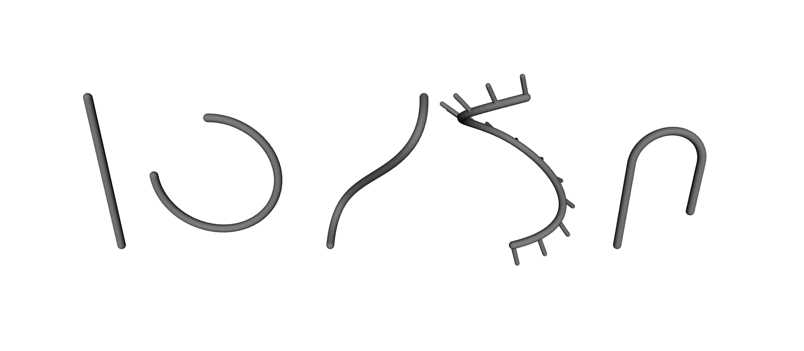
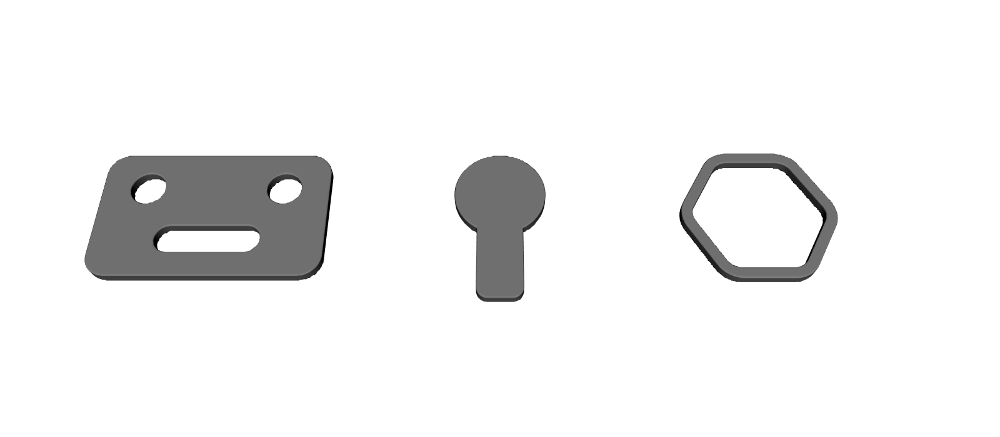
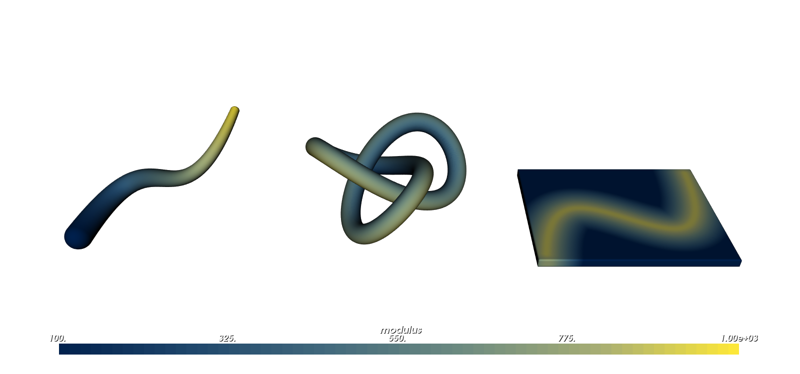
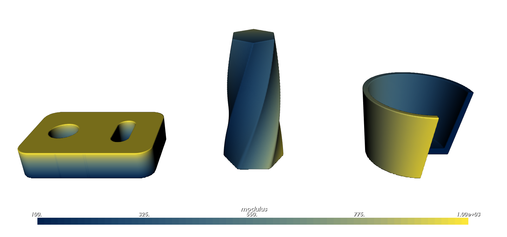
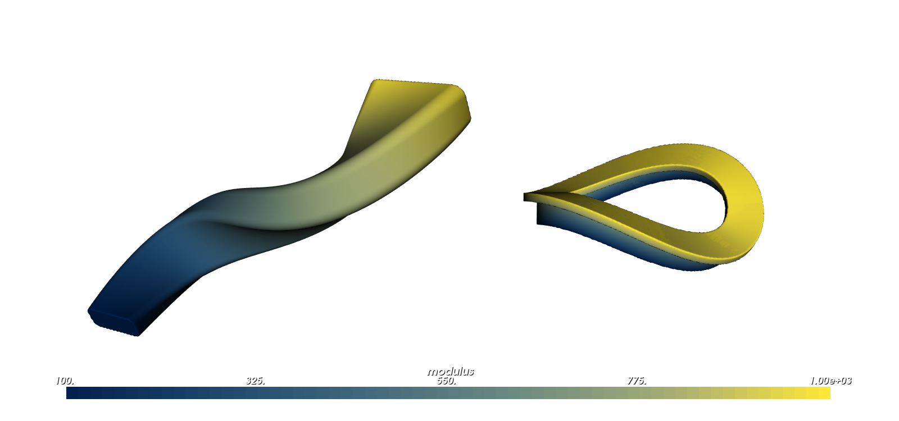
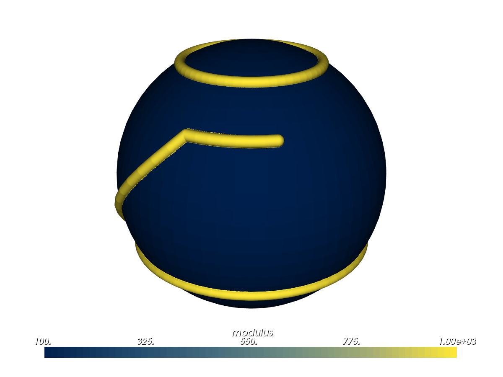

Curves, Profiles and Sweeps#
Many parts are easier to describe with curves than with boxes and spheres: a pipe that follows a path, a bracket cut from a flat outline, a cup turned on a lathe. This guide shows you how to build them. You start with curves, use them to draw flat profiles, and turn both into solids, grading material along the way.
What You Will Learn#
Draw curves: lines, arcs and smooth curves through points you choose.
Make profiles: flat shapes with holes and rounded corners.
Build solids: tubes, extrusions, revolved parts and sweeps.
Grade material along, around or across those solids.
Reuse curves you already have, from a mesh or a part’s outline.
Prerequisites#
This guide assumes you have completed the Getting Started Guide, in particular Lesson 2 (CSG) and Lessons 4–6 (attributes), and the Functional Grading Guide. Sizes that change through space, such as a tapering tube radius, are explained as you go; Offsets, Blends and Arrays covers them in more depth.
Running the Examples#
All scripts for this guide are in examples/curves/. Run them from that folder, because Lesson 6 loads a mesh by a path relative to it:
cd examples/curves
python 01_curve_types.py
Each script ends with viz.Render(root), which opens the interactive OpenVCAD preview window.
Note: Lessons 3 to 6 attach a modulus (stiffness) attribute. To see it in colour, select
modulusfrom the Attribute list at the top of the render window (also under Render -> Attribute).
The Three Building Blocks#
Building block |
What it is |
Python |
|---|---|---|
Curve |
A line through space: straight, circular or smooth. A flat curve is one that stays at z = 0. |
|
Profile |
A flat 2D shape in the XY plane: an outline with any number of holes. |
|
Solid |
A part made from curves and profiles. |
|
Curves and profiles never change after you make them, so one curve can feed many parts. Points can be tuples, lists, pv.Vec3, pv.Point2 or NumPy arrays; 2D points get z = 0. Functions that return many points return NumPy arrays.
Lesson 1: Curves#
A curve is a line through space. It has no thickness, so it is not a part on its own; later lessons use curves as centre lines, paths and outlines. There are five kinds:
pv.LineSegment(a, b)andpv.PolylineCurve(points, closed=False)are straight: one line, or a chain of lines through a list of points.pv.ArcCurve(center, radius, start_angle, end_angle, normal=(0, 0, 1))is part of a circle (angles in degrees).pv.ArcCurve.circle(center, radius)is a full circle.pv.BezierCurve(control_points)runs smoothly from the first control point to the last. The points in between pull the curve toward them without lying on it.pv.BSplineCurve.interpolate(points, closed=False)draws a smooth curve through every point you give it, and is usually the easiest way to draw a smooth path. The result is a B-spline: a smooth curve built from short pieces that join without kinks.pv.BSplineCurve(control_points, degree=3)builds one from control points instead.pv.CompositeCurve([...])joins curves end to start. Corners where they meet are fine.
Each curve is traced by a number t, its parameter: as t runs across curve.domain, curve.point(t) moves from start to end. Curves also give you tangent(t) (the direction of travel), length(), closest_point(p), distance(p) and sample(n) (n points evenly spaced along the curve).
Frames. Tubes and sweeps need to know which way is “sideways” along a curve, so each point has a frame: the tangent points along the curve, and the normal and binormal point across it. OpenVCAD uses rotation-minimizing frames, which follow every bend but never spin around the curve, like a bead sliding along a bent wire. So a profile carried along a curve does not twist by accident. curve.frames(n) returns n evenly spaced frames; pv.CurveFrames(curve) gives the frame at any t.
The example draws one curve of each kind as a chain of thin struts. Short ribs on the B-spline point along its frame normals: they turn as the curve bends, but never spin around it.
import pyvcad as pv
import pyvcad_rendering as viz
def strut_chain(points, radius):
"""Thin struts joining consecutive points: a quick way to look at a curve."""
struts = [pv.Strut(pv.Vec3(*a), pv.Vec3(*b), radius) for a, b in zip(points[:-1], points[1:])]
return pv.BBoxUnion(struts)
# Five kinds of curve. Points can be tuples, lists, Vec3 or NumPy arrays; 2D points get z = 0.
curves = [
pv.LineSegment((0, 0, 0), (0, 0, 24)),
pv.ArcCurve((16, 0, 12), 9.0, -90.0, 180.0, normal=(0, 1, 0)),
pv.BezierCurve([(32, 0, 0), (32, 18, 6), (46, -18, 18), (46, 0, 24)]),
pv.BSplineCurve.interpolate([(60, 0, 0), (68, 7, 6), (60, 14, 12), (52, 7, 18), (60, 0, 24)]),
pv.CompositeCurve([
pv.LineSegment((76, 0, 0), (76, 0, 14)),
pv.ArcCurve((81, 0, 14), 5.0, 180.0, 0.0, normal=(0, -1, 0)),
pv.LineSegment((86, 0, 14), (86, 0, 6)),
]),
]
# Sample each curve evenly in arc length and draw it.
parts = [strut_chain(curve.sample(60), 0.6) for curve in curves]
# Rotation-minimizing frames on the B-spline: short ribs along each frame's normal.
spline = curves[3]
frames = spline.frames(14)
for origin, normal in zip(frames["origins"], frames["normals"]):
parts.append(pv.Strut(pv.Vec3(*origin), pv.Vec3(*(origin + 3.5 * normal)), 0.35))
root = pv.BBoxUnion(parts)
viz.Render(root)
Render

Lesson 2: Profiles#
A profile is a flat 2D shape in the XY plane: an outline plus any number of holes, like a shape you would sketch on paper. You turn it into a solid by extruding, revolving or sweeping it (Lessons 4 and 5). The quickest start is a ready-made shape:
Shape |
Call |
|---|---|
Circle |
|
Rectangle |
|
Rounded rectangle |
|
Slot |
|
Regular polygon |
|
Polygon |
|
Profiles combine with | (union), & (intersection) and - (difference, which is how you cut holes). profile.offset(distance) grows a profile all the way round, or shrinks it for a negative distance. profile.fillet(radius) rounds every corner between straight edges and arcs with an exact tangent arc (Sketching and Extruding covers choosing corners, chamfers and more).
You can also build a profile from closed curves with pv.Profile([outline, hole, ...]) (OpenVCAD works out which loops are holes), from a pv.Polygon2, or by slicing a part at height z with pv.Profile.cross_section(node, z, cell_size). Loops may touch and nest, but they must not cross themselves or each other; a profile that does raises an error saying where. To combine overlapping shapes, build each one as its own profile and join them with |.
The example makes a bracket plate with bolt holes and a slot, a keyhole with rounded bottom corners, and a hexagonal wall. Each is extruded into a thin slab so you can see it (Lesson 4 explains pv.Extrude).
import pyvcad as pv
import pyvcad_rendering as viz
# A bracket plate: a rounded rectangle with two bolt holes and a slot cut out.
plate = pv.Profile.rounded_rectangle(40.0, 24.0, 4.0)
plate = plate - pv.Profile.circle(3.0, center=(-12, 5)) - pv.Profile.circle(3.0, center=(12, 5))
plate = plate - pv.Profile.slot(18.0, 5.0, center=(0, -5))
# Booleans keep the exact curves: a keyhole from a circle and a rectangle. fillet() rounds the
# corners between straight edges with exact arcs.
keyhole = pv.Profile.circle(8.0, center=(0, 4)) | pv.Profile.rectangle(8.0, 20.0, center=(0, -6))
keyhole = keyhole.fillet(2.0)
# Offsets and fillets: a hexagon with rounded corners, and a 2 mm wall around it.
hexagon = pv.Profile.regular_polygon(6, 12.0).fillet(3.0)
wall = hexagon.offset(2.0) - hexagon
# Thin slabs to look at the profiles (Extrude places a profile's plane at z = 0).
root = pv.Union([
pv.Translate(-50, 0, 0, pv.Extrude(plate, 2.0)),
pv.Extrude(keyhole, 2.0),
pv.Translate(45, 0, 0, pv.Extrude(wall, 2.0)),
])
viz.Render(root)
Render

Profiles keep their true curves: the keyhole’s round top is an exact arc, not a polygon of short sides.
Lesson 3: Tubes#
A tube is a pipe along a curve: every point within a given radius of it, for wires, channels or ribs. pv.Tube(curve, radius) makes one. Open curves end in rounded caps; pass start_cap=pv.CapMode.Butt or end_cap=pv.CapMode.Butt for a flat end.
A radius that changes. The radius can be a field: a value that differs from point to point, like the attributes in the Functional Grading Guide. The tube reads it at the nearest point of the curve, so any FloatAttribute makes the tube fatter where the field is larger.
For a taper along the curve, start from curve.length_field(normalized=True), which is 0 at the start of the curve and 1 at the end. .map_range(0, 1, 3, 1) turns values from 0 to 1 into values from 3 to 1, so the radius tapers from 3 to 1. Wrap a field radius in pv.ScalarParameter(field, minimum=..., maximum=...): the tube needs the largest radius to size its bounding box.
Grading. Each solid in this guide has coordinate fields, which say where a point sits in the solid’s own terms, such as how far along a tube it is. Get one with coordinate_field(name) and turn it into a material property with map_range. A tube offers normalized_length (0 at the start, 1 at the end), length, parameter, angle (degrees around the curve, measured from its frames) and distance (from the centre line).
Distance to a curve. curve.distance_field() is the distance from any point in space to the curve. Use it to grade any part, for example to make it stiffer near a path.
The example builds a horn that tapers from 3 mm to 1 mm and stiffens toward its narrow end, a trefoil knot graded around the tube, and a plate that is stiffest along a path across it. Select modulus in the viewer.
import math
import pyvcad as pv
import pyvcad_rendering as viz
# A tube along a spline whose radius tapers from 3 to 1 mm: a law on arc length is a field built from
# the curve's own length field. A field radius needs bounds so the tube can size its bounding box.
path = pv.BSplineCurve.interpolate([(0, 0, 0), (12, 14, 6), (26, 4, 14), (36, 16, 24)])
taper = path.length_field(normalized=True).map_range(0.0, 1.0, 3.0, 1.0)
horn = pv.Tube(path, pv.ScalarParameter(taper, minimum=1.0, maximum=3.0), end_cap=pv.CapMode.Butt)
# The tube's coordinates are fields too: grade the material along its length.
horn.set_attribute(pv.DefaultAttributes.MODULUS,
horn.coordinate_field("normalized_length").map_range(0.0, 1.0, 100.0, 1000.0))
# A closed trefoil knot, graded by the angle around the tube (measured from rotation-minimizing frames).
knot_points = []
for i in range(90):
a = 2.0 * math.pi * i / 90
knot_points.append((6.0 * (math.sin(a) + 2.0 * math.sin(2.0 * a)),
6.0 * (math.cos(a) - 2.0 * math.cos(2.0 * a)),
-6.0 * math.sin(3.0 * a)))
knot_curve = pv.BSplineCurve.interpolate(knot_points, closed=True)
knot = pv.Tube(knot_curve, 2.2)
knot.set_attribute(pv.DefaultAttributes.MODULUS,
knot.coordinate_field("angle").map_range(0.0, 360.0, 100.0, 1000.0))
# Distance to a curve as a field: a plate that is stiffer near a path drawn across it.
rib = pv.BSplineCurve.interpolate([(-20, -15, 0), (-5, 0, 0), (5, -5, 0), (20, 15, 0)])
plate = pv.RectPrism(pv.Vec3(0, 0, 0), pv.Vec3(44, 34, 2))
plate.set_attribute(pv.DefaultAttributes.MODULUS,
rib.distance_field().map_range(0.0, 8.0, 1000.0, 100.0, clamp=True))
root = pv.Union([horn, pv.Translate(70, 8, 12, knot), pv.Translate(125, 8, 0, plate)])
viz.Render(root)
Render (modulus)

For a single straight tube, pv.Strut is faster. Keep the radius smaller than the curve’s tightest bend, or the tube’s surface folds over itself.
Lesson 4: Extrude and Revolve#
An extrusion pushes a profile straight up into a slab or column. A revolve spins a profile around an axis, like a part turned on a lathe.
pv.Extrude(profile, height) runs from the profile’s plane (z = 0) up to height. A negative height goes down, and symmetric=True centres the solid on the plane. Two options shape the walls:
draft=tilts them, in degrees. A positive draft narrows the shape away from the profile plane; a negative one widens it. A draft that would shrink the section to nothing before the far end raises an error giving the largest height (or draft) that fits.twist=turns the shape counter-clockwise about +Z as it goes, reaching that many degrees at the far end.
pv.Revolve(profile, angle=360) spins a profile around the Z axis. Draw the profile as a half cross-section: its x is the distance from the axis (never negative), and its y becomes the height z. A partial revolve starts on the +X side of the XZ plane, turns counter-clockwise seen from above, and is closed by flat end faces. Where the profile touches the axis, the part is solid, with no seam.
By default an extrusion starts at z = 0 and a revolve turns about the Z axis. Place the result with pv.Translate, pv.Rotate or pv.Transform, or draw the profile on another plane with plane=pv.Plane... (see Sketching and Extruding, Lesson 4). The coordinate fields are:
Extrude:height(above the bottom face),normalized_height(0 at the bottom, 1 at the top),uandv(position across the section, turning with the twist) andprofile_distance(distance to the section’s edge, negative inside).Revolve:u(distance from the axis),v(height),angle(degrees from the start),normalized_angle(0 to 1) andprofile_distance.
The example builds a plate graded from soft at the bottom to stiff at the top; a hexagonal column that leans in by 4 degrees and twists 90 degrees, graded across its section so the grading twists with it; and a cup revolved 270 degrees to show its wall, graded around the axis. Select modulus in the viewer.
import pyvcad as pv
import pyvcad_rendering as viz
# Extrude: a plate with holes, graded from soft at the bottom to stiff at the top.
plate = pv.Profile.rounded_rectangle(36.0, 24.0, 4.0)
plate = plate - pv.Profile.circle(4.0, center=(-9, 0)) - pv.Profile.slot(12.0, 5.0, center=(8, 0), angle=90.0)
block = pv.Extrude(plate, 8.0)
block.set_attribute(pv.DefaultAttributes.MODULUS,
block.coordinate_field("normalized_height").map_range(0.0, 1.0, 100.0, 1000.0))
# Draft and twist: a hexagonal column that narrows by 4 degrees and turns 90 degrees as it rises,
# graded across its section; the section coordinate u turns with the twist.
hexagon = pv.Profile.regular_polygon(6, 9.0).fillet(1.5)
column = pv.Extrude(hexagon, 36.0, draft=4.0, twist=90.0)
column.set_attribute(pv.DefaultAttributes.MODULUS,
column.coordinate_field("u").map_range(-9.0, 9.0, 100.0, 1000.0))
# Revolve: a cup from a half-section (x is the distance from the axis), swept 270 degrees to show its
# wall, graded around the axis.
cup_profile = pv.Profile.polygon([(0, 0), (12, 0), (15, 20), (13.5, 20), (10.5, 2), (0, 2)])
cup = pv.Revolve(cup_profile, 270.0)
cup.set_attribute(pv.DefaultAttributes.MODULUS,
cup.coordinate_field("normalized_angle").map_range(0.0, 1.0, 100.0, 1000.0))
root = pv.Union([pv.Translate(-45, 0, 0, block), column, pv.Translate(45, 0, 0, cup)])
viz.Render(root)
Render (modulus)

Lesson 5: Sweeps#
A sweep carries a profile along a path, like icing piped from a bag: the nozzle’s shape is the profile, and the path of your hand is the curve. A tube is like a sweep of a circle; pv.Sweep(profile, path) takes any profile, and lets it grow and twist as it travels.
You draw the profile in its own plane, with coordinates u and v. It rides in the path’s rotation-minimizing frames (Lesson 1), u along the normal and v along the binormal, so it never twists on its own. For a flat path, v points out of the path’s plane; up=(x, y, z) chooses which way v starts out.
scale= grows the profile (2.0 is twice the size), and twist= turns it counter-clockwise about the path, in degrees. Unlike an extrusion’s twist, which is the total turn at the top, a sweep’s twist is the angle at each point: a constant twist=30 turns the whole section by 30 degrees, and twist=along * 180 turns it half a turn from one end to the other. Each can be a number, or a field read at the nearest path point, so a change along the path starts from the path’s length_field, as for the tube radius. A field scale needs pv.ScalarParameter bounds with a minimum above zero.
An open path ends in flat faces. A closed path joins up with itself, and its frames meet at the seam.
Where the path bends, the profile must stay inside the bend’s radius on the inner side; otherwise the section would fold over itself, and pv.Sweep raises an error naming the bend. Sharp corners of a polyline path are fine. For a round section along a tight curve, use pv.Tube, which handles any bend.
A sweep’s coordinate fields are parameter, length, normalized_length, u and v (position across the profile, before scale and twist) and profile_distance.
The example sweeps a rounded rectangle along a spline, growing to 1.8 times its size and twisting half a turn, graded along its length. It also sweeps a T-shape around a closed, wavy loop, graded from the foot of the T (soft) to its flange (stiff); up=(0, 0, 1) points v up so the flange stays on top. Select modulus in the viewer.
import math
import pyvcad as pv
import pyvcad_rendering as viz
# A profile swept along a 3D path. The profile rides in the path's rotation-minimizing frames, so it
# does not twist on its own; scale and twist laws along the path are fields built from the path's
# own coordinates.
path = pv.BSplineCurve.interpolate([(0, 0, 0), (14, 12, 8), (30, 4, 18), (44, 14, 28)])
along = path.length_field(normalized=True)
horn = pv.Sweep(pv.Profile.rounded_rectangle(8.0, 4.0, 1.0), path,
scale=pv.ScalarParameter(along.map_range(0.0, 1.0, 1.0, 1.8), minimum=1.0, maximum=1.8),
twist=along * 180.0)
horn.set_attribute(pv.DefaultAttributes.MODULUS, horn.coordinate_field("normalized_length").map_range(0.0, 1.0, 100.0, 1000.0))
# A closed path: a wavy elliptical loop swept with a T-shaped section, flange up, graded across
# the section. The frames meet at the seam.
loop = pv.BSplineCurve.interpolate([(14 * math.cos(a), 9 * math.sin(a), 3 * math.sin(2 * a))
for a in (2 * math.pi * i / 24 for i in range(24))], closed=True)
tee = pv.Profile.rectangle(5.0, 1.2, center=(0, 1.9)) | pv.Profile.rectangle(1.2, 4.0)
ring = pv.Sweep(tee, loop, up=(0, 0, 1))
ring.set_attribute(pv.DefaultAttributes.MODULUS, ring.coordinate_field("v").map_range(-2.0, 2.5, 100.0, 1000.0))
root = pv.Union([horn, pv.Translate(75, 8, 14, ring)])
viz.Render(root)
Render (modulus)

As with tubes, keep the profile smaller than the path’s tightest bend. Each point belongs to the slice through its nearest path point, so on a tighter bend the slices overlap.
Lesson 6: Curves From Data You Already Have#
Sometimes the curve you need is already in your design: a seam across a scanned surface, the border of a region you picked on a mesh, or a part’s outline at some height. OpenVCAD hands you these as curves:
mesh.shortest_surface_path(a, b).to_curve(): the shortest path along a mesh’s edges between two vertices (see the Mesh Selection guide);mesh.boundary_loops()andselection.boundary_loops(): the borders of a mesh, or of a selection on it, as closed curves;pv.contour_curves(node, z, cell_size, iso=0.0): a part’s outlines on the plane at height z, traced on a grid of squarescell_sizewide (marching squares).pv.Profile.cross_sectiongives the filled shape instead.
The example puts three thin, stiff tubes on a soft sphere mesh: along a shortest path, around the border of a patch at the top, and around the outline at z = -1.25. Select modulus in the viewer to make the tubes stand out.
import pyvcad as pv
import pyvcad_rendering as viz
# Curves from data that OpenVCAD already has: a path over a mesh, the border of a mesh selection,
# and the contour of a node. Each becomes a tube on a sphere of radius 2.5.
mesh_file = "../data/3d_models/sphere.stl"
mesh = pv.SurfaceMesh(mesh_file)
sphere = pv.Mesh(mesh_file)
sphere.set_attribute(pv.DefaultAttributes.MODULUS, pv.FloatAttribute(100.0))
# 1. The shortest path along mesh edges between two vertices, as a curve.
start = mesh.nearest_vertex(pv.Vec3(-2.0, -1.2, -0.8))
end = mesh.nearest_vertex(pv.Vec3(1.2, -1.6, 1.4))
seam = pv.Tube(mesh.shortest_surface_path(start, end).to_curve(), 0.1)
# 2. The border of a selection: every triangle within 1.2 mm of the top vertex, along the surface.
top = mesh.nearest_vertex(pv.Vec3(0.0, 0.0, 2.5))
cap = mesh.select_by_geodesic_radius(top, 1.2)
ring = pv.Tube(cap.boundary_loops()[0], 0.1)
# 3. The contour of a node: the sphere's outline at z = -1.25, traced with marching squares.
contour = pv.Tube(pv.contour_curves(sphere, -1.25, 0.02)[0], 0.1)
for tube in (seam, ring, contour):
tube.set_attribute(pv.DefaultAttributes.MODULUS, pv.FloatAttribute(1000.0))
root = pv.Union([sphere, seam, ring, contour])
viz.Render(root)
Render (modulus)

Advanced Notes#
Every class and argument is in the Python API: Curves and Profiles and leaf nodes.
More on curves. length_at(t) and parameter_at_length(s) convert between t and length, tessellate(tolerance) returns a polyline within tolerance of the curve, and parameter_field() and length_field(normalized=False) are fields like the ones in Lesson 3. Nearest points are exact for segments, polylines and arcs; for Bezier curves and B-splines they come from a numerical search accurate to about 1e-12 of the curve’s size.
More on profiles. A profile’s distance is computed from its curves, so it is exact, and booleans keep exact arcs and edges. Round offsets of profiles made of straight edges and arcs are exact too; other offsets are polygons within a small tolerance (by default 0.001 mm, or 1e-4 of the profile’s size if that is smaller). offset() and the method forms of the booleans (union(), intersection(), difference()) take a tolerance= argument. cross_section and contour_curves are accurate to about their cell size.
Frames on closed curves. Carried once around a loop, a frame can come back turned. OpenVCAD spreads that leftover turn evenly along the loop so the frames meet at the seam; pv.CurveFrames(curve).holonomy reports it in degrees.
Distance accuracy. A solid’s surface is always in the right place, but its signed distance away from the surface is not always exact. After prepare(), distance_accuracy() describes the whole part, every node below it included: exact (the true distance), bound (within the bandwidth, never more than lipschitz_bound() times the true distance, so safe to offset or blend further) or approximate (right at the surface, possibly off farther away). The compilers use it to skip voxels that provably hold no material; for an approximate part they sample every voxel, so the output is the same either way:
Node |
Accuracy |
|---|---|
|
exact for a straight constant-radius tube; a bound for a curved one (its depth is underestimated once the radius passes the curve’s radius of curvature); approximate for a field radius, or for butt caps on a curved open curve |
|
exact; approximate with draft, twist or an offset law (just outside the part its distance drops below the distance to its bounding box) |
|
exact, for full and partial revolves |
|
exact for a straight path with constant scale and a constant twist; approximate otherwise |
|
approximate (it blends the sections’ distances) |
It also matters for operations that read distances away from the surface, such as pv.Offset, pv.Shell and blends (see Offsets, Blends and Arrays).
PolygonExtrude and PolygonRevolve. These still work, now as the polygon cases of Extrude and Revolve (placed in the polygon’s own plane or on the given axis), so they gain the coordinate fields and exact partial revolves. Use them for polygons given as 3D points, and Extrude and Revolve with a Profile for everything else.
See Also#
Sketching and Extruding to draw profiles with a pen-style sketch, construction geometry and fillets, place them on any plane, and loft between them
Python API: Curves and Profiles and leaf nodes
Offsets, Blends and Arrays for field-valued parameters and
pv.ScalarParameterFields: Driving Material and Geometry for shaping the fields that drive radius, scale and twist
Deforming Space to bend, twist or wrap a finished solid instead of sweeping it
Mesh Selection for picking the mesh paths and regions used in Lesson 6